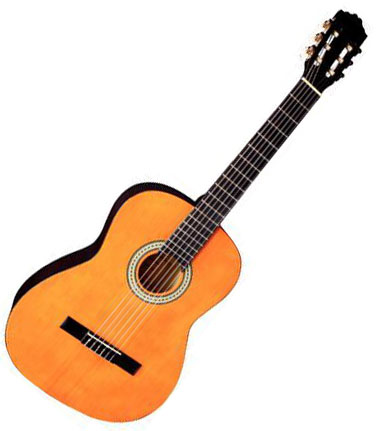
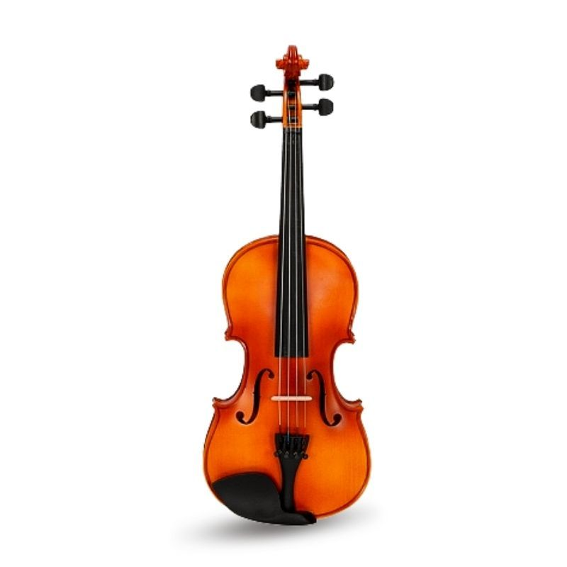
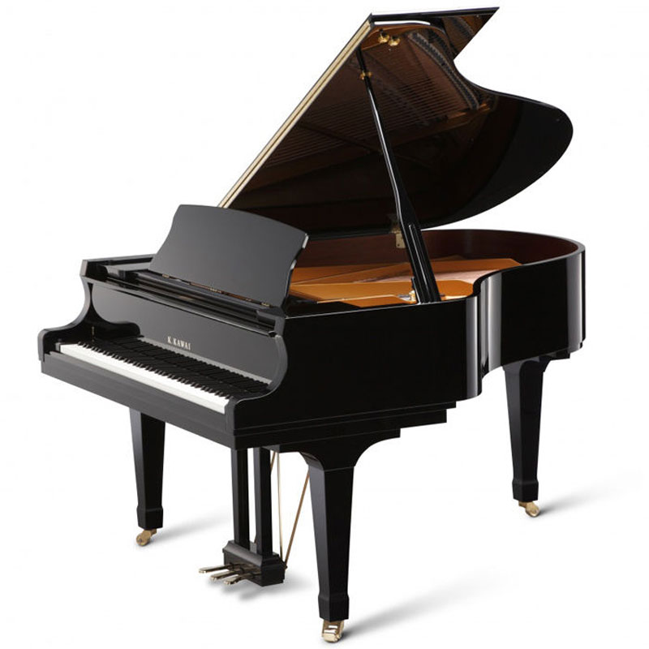
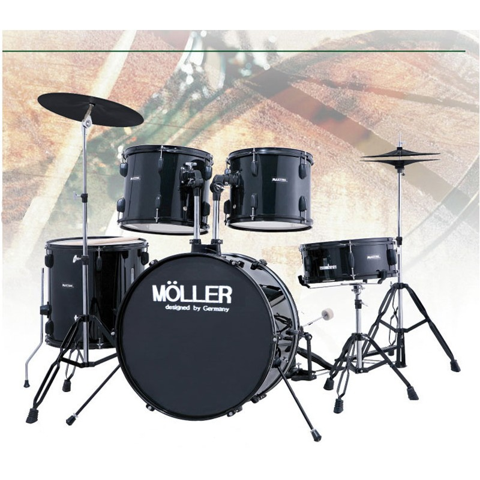
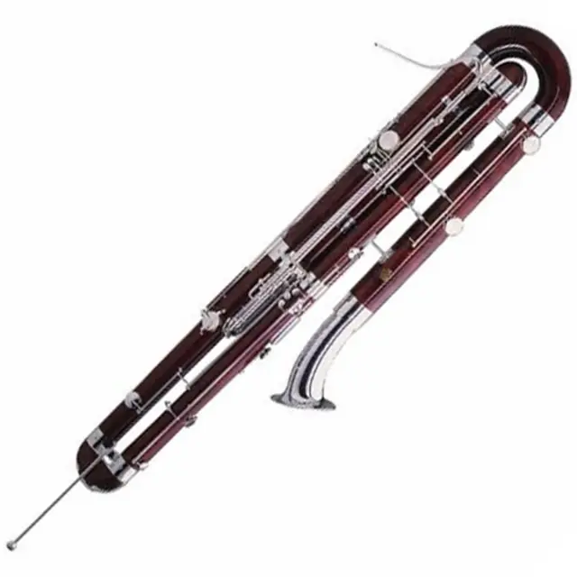

| Naziv instrumenta | Slika instrumenta | Zvuk instrumenta |
|---|---|---|
| Gitara |  |

Saznaj vise |
| Violina |  |
Saznaj vise |
| Klavir |  |
Saznaj vise |
| Bubnjevi |  |
Saznaj vise |
| Harmonika |
Saznaj vise |
|
| Kontrafagot |  |
Saznaj vise |